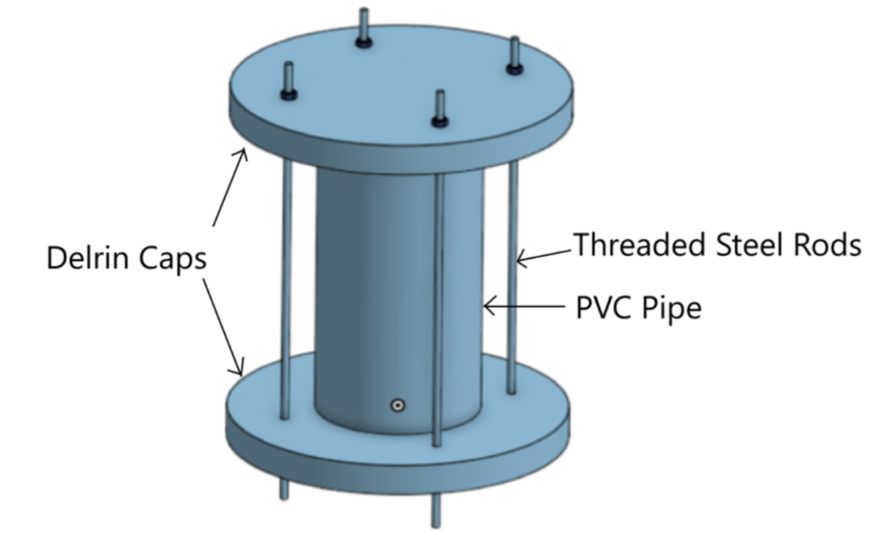
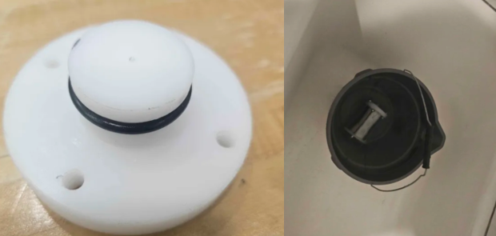
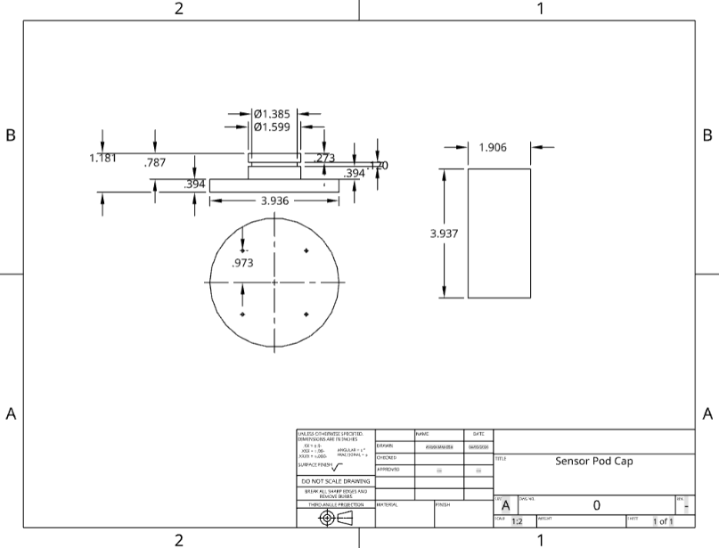

Hardware · Olin CREST Lab · Spring 2026
Underwater Sensor Pod
A serviceable, lower-cost pod for collecting temperature data underwater.
Sensor pods are often used to take measurements underwater. Temperature-measuring sensor pods are especially important for measuring phenomena such as lake thermoclines, which could be used to find biological hotspots. However, many underwater sensor pods are expensive and difficult to service. This makes it difficult to use or swap out sensors and perform maintenance. The goal of this project was to create an inexpensive, serviceable sensor pod.
The sensor pod records underwater data such as temperature and depth data from lakes. It is serviceable and can be opened and closed to change batteries or change the sensors used. It stores data on an SD card, which can be removed and inspected. The current prototype records temperature data over time, stores it on an SD card, and can be deployed underwater in a capsule. I designed the CAD, machined the sensor pod, prototyped the circuit, programmed the ESP32, and also deployed the sensor pod in a bucket overnight with a napkin to test waterproofing.


I created a waterproof sensor pod that constantly logged data from a temperature probe to a CSV file stored on an SD card. It logged raw voltages from the sensor as well as the calculated temperature. The process and all the schematics and code are open-sourced on GitHub for anyone to use.
This project gave me experience building a complete physical sensing system rather than working primarily in software. I learned how to machine components on a lathe, design and precisely manufacture O-ring grooves for waterproof sealing, prototype the electronics, and program an ESP32 to read sensor data and log it to an SD card.


One of the biggest challenges was waterproofing the enclosure. I learned how sensitive a physical system can be to machining tolerances, sealing, and assembly, and how problems that seem simple in CAD can become much more difficult when building and testing the actual hardware. Taking the sensor pod from a CAD model to a deployable prototype gave me a better understanding of the full process of designing, manufacturing, programming, and validating a physical system.